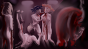

Виджет для отслеживания прогресса с девочками, версия для 7дл (карма, Мику, отображение роли)

Виджет для отслеживания прогресса с девочками, версия для 7дл (карма, Мику, отображение роли)
автор 7dl-kun в Пн 8 Сен 2014 - 16:37
- Старый виджет:
- Виджет на основе оригинального фильтра с отслеживанием прогресса с девочками. 7дл-версия отличается наличием счётчика кармы и лп для Мику (в оригинале не было, так как в оригинале рута Мику нет)
Установка:
1. Качаете файл https://drive.google.com/file/d/0BwAhLCg03AtudnJ2UG5mVXVuNDg/view?usp=sharing
2. Перемещаете или удаляете виджет-файл по адресу game\filters_other\
3. Скидываете скачанный файл по адресу game\filters_other\
4. В настройках фильтров выбираете виджет 7дл
Для тех, кому лень заморачиваться с копированием, исходный код:- Код:
init:
$ filters["widget__girls_progress"] = u"Отображение очков отношений с девочками"
python early:
def widget__girls_progress():
def editoverlay():
ui.button(clicked=None, xpos=1.0, xanchor=1.0, ypos=2, xpadding=6, xminimum=200)
ui.text("%s: %d" % ("Прогресс со Славей", lp_sl), style="button_text", size=14)
ui.button(clicked=None, xpos=0.85, xanchor=1.0, ypos=2, xpadding=6, xminimum=200)
ui.text("%s: %d" % ("Прогресс с Леной", lp_un), style="button_text", size=14)
ui.button(clicked=None, xpos=0.70, xanchor=1.0, ypos=2, xpadding=6, xminimum=200)
ui.text("%s: %d" % ("Прогресс с Алисой", lp_dv), style="button_text", size=14)
ui.button(clicked=None, xpos=0.55, xanchor=1.0, ypos=2, xpadding=6, xminimum=200)
ui.text("%s: %d" % ("Прогресс с Мику", lp_mi), style="button_text", size=14)
ui.button(clicked=None, xpos=0.40, xanchor=1.0, ypos=2, xpadding=6, xminimum=200)
ui.text("%s: %d" % ("Прогресс с Ульяной", lp_us), style="button_text", size=14)
ui.button(clicked=None, xpos=0.25, xanchor=1.0, ypos=2, xpadding=6, xminimum=200)
ui.text("%s: %s" % ("Роль", plthr), style="button_text", size=14)
ui.button(clicked=None, xpos=0.0, xanchor=0.0, ypos=2, xpadding=6, xminimum=200)
ui.text("%s: %d" % ("Карма", karma), style="button_text", size=14)
config.overlay_functions.append(editoverlay)
Новый виджет поставляется вместе с модом. В фильтрах выбирайте "Прогресс и информация по моду 7ДЛ", предварительно сняв галочки с других считалок.
Последний раз редактировалось: 7dl-kun (Вт 15 Сен 2015 - 14:17), всего редактировалось 3 раз(а)

7dl-kun- Находка для шпиона

- Сообщения : 3026
Дата регистрации : 2014-09-07
Откуда : здесь столько наркоманов?
Re: Виджет для отслеживания прогресса с девочками, версия для 7дл (карма, Мику, отображение роли)
автор Ingvar в Пн 8 Сен 2014 - 21:35
Ingvar- Сыч

- Сообщения : 63
Дата регистрации : 2014-09-07
Возраст : 39
Откуда : Санкт-Петербург
Re: Виджет для отслеживания прогресса с девочками, версия для 7дл (карма, Мику, отображение роли)
автор Admin в Пн 8 Сен 2014 - 23:01
Admin- Admin
- Сообщения : 84
Дата регистрации : 2014-09-06
Re: Виджет для отслеживания прогресса с девочками, версия для 7дл (карма, Мику, отображение роли)
автор Гость в Вт 4 Ноя 2014 - 18:00
Гость- Гость
Re: Виджет для отслеживания прогресса с девочками, версия для 7дл (карма, Мику, отображение роли)
автор Гость в Вт 4 Ноя 2014 - 18:05
Гость- Гость
Re: Виджет для отслеживания прогресса с девочками, версия для 7дл (карма, Мику, отображение роли)
автор Гость в Вт 4 Ноя 2014 - 18:06
Гость- Гость
Re: Виджет для отслеживания прогресса с девочками, версия для 7дл (карма, Мику, отображение роли)
автор Chess в Вт 4 Ноя 2014 - 18:20

Chess- Находка для шпиона
- Сообщения : 3798
Дата регистрации : 2014-10-05
Откуда : Город на краю света
Re: Виджет для отслеживания прогресса с девочками, версия для 7дл (карма, Мику, отображение роли)
автор Гость в Вт 4 Ноя 2014 - 19:08
Гость- Гость
Re: Виджет для отслеживания прогресса с девочками, версия для 7дл (карма, Мику, отображение роли)
автор Chess в Вт 4 Ноя 2014 - 19:10
Имя файла - progress_widget.rpy
init:
$ filters["widget__girls_progress"] = u"Отображение очков отношений с девочками"
python early:
def widget__girls_progress():
def editoverlay():
ui.button(clicked=None, xpos=1.0, xanchor=1.0, ypos=12, xpadding=6, xminimum=200)
ui.text("%s: %d" % ("Прогресс со Славей", lp_sl), style="button_text", size=14)
ui.button(clicked=None, xpos=0.85, xanchor=1.0, ypos=12, xpadding=6, xminimum=200)
ui.text("%s: %d" % ("Прогресс с Леной", lp_un), style="button_text", size=14)
ui.button(clicked=None, xpos=0.70, xanchor=1.0, ypos=12, xpadding=6, xminimum=200)
ui.text("%s: %d" % ("Прогресс с Алисой", lp_dv), style="button_text", size=14)
ui.button(clicked=None, xpos=0.55, xanchor=1.0, ypos=12, xpadding=6, xminimum=200)
ui.text("%s: %d" % ("Прогресс с Мику", lp_mi), style="button_text", size=14)
ui.button(clicked=None, xpos=0.40, xanchor=1.0, ypos=12, xpadding=6, xminimum=200)
ui.text("%s: %d" % ("Прогресс с Ульяной", lp_us), style="button_text", size=14)
ui.button(clicked=None, xpos=0.25, xanchor=1.0, ypos=12, xpadding=6, xminimum=200)
ui.text("%s: %s" % ("Роль", plthr), style="button_text", size=14)
ui.button(clicked=None, xpos=0.0, xanchor=0.0, ypos=12, xpadding=6, xminimum=200)
ui.text("%s: %d" % ("Карма", karma), style="button_text", size=14)
config.overlay_functions.append(editoverlay)
У меня всё работает.
Chess- Находка для шпиона
- Сообщения : 3798
Дата регистрации : 2014-10-05
Откуда : Город на краю света
Re: Виджет для отслеживания прогресса с девочками, версия для 7дл (карма, Мику, отображение роли)
автор Гость в Вт 4 Ноя 2014 - 19:17
Гость- Гость
Re: Виджет для отслеживания прогресса с девочками, версия для 7дл (карма, Мику, отображение роли)
автор Chess в Вт 4 Ноя 2014 - 19:18
rghost.ru 58882092
Chess- Находка для шпиона
- Сообщения : 3798
Дата регистрации : 2014-10-05
Откуда : Город на краю света
Re: Виджет для отслеживания прогресса с девочками, версия для 7дл (карма, Мику, отображение роли)
автор Gragotan в Вс 16 Ноя 2014 - 16:52
И на вашей ссылке, и на ссылке 7dl-kun пишет, что файл удален.Chess пишет:Хм. Попробуй всю папку:
rghost.ru 58882092
Gragotan- Ньюфаг

- Сообщения : 9
Дата регистрации : 2014-10-15
Возраст : 21
Re: Виджет для отслеживания прогресса с девочками, версия для 7дл (карма, Мику, отображение роли)
автор Chess в Вс 16 Ноя 2014 - 16:58
Chess- Находка для шпиона
- Сообщения : 3798
Дата регистрации : 2014-10-05
Откуда : Город на краю света
Re: Виджет для отслеживания прогресса с девочками, версия для 7дл (карма, Мику, отображение роли)
автор Gragotan в Вс 16 Ноя 2014 - 17:35
Gragotan- Ньюфаг
- Сообщения : 9
Дата регистрации : 2014-10-15
Возраст : 21
Re: Виджет для отслеживания прогресса с девочками, версия для 7дл (карма, Мику, отображение роли)
автор oldhikki в Сб 4 Июл 2015 - 13:08
крашит если закинуть файл куда надо
- код краша:
- I'm sorry, but an uncaught exception occurred.
While running game code:
File "renpy/common/00start.rpy", line 160, in script call
call expression "splashscreen" from _call_splashscreen_1
File "game/filters_other/progress_widget.rpy", line 18, in editoverlay
ui.text("%s: %s" % ("Роль", plthr), style="button_text", size=14)
NameError: global name 'plthr' is not defined
-- Full Traceback ------------------------------------------------------------
Full traceback:
File "renpy/common/00start.rpy", line 160, in script call
call expression "splashscreen" from _call_splashscreen_1
File "game/script.rpyc", line 371, in script
File "D:\Steam\steamapps\common\Everlasting Summer\renpy\ast.py", line 1229, in execute
renpy.exports.with_statement(trans, paired)
File "D:\Steam\steamapps\common\Everlasting Summer\renpy\exports.py", line 1230, in with_statement
return renpy.game.interface.do_with(trans, paired, clear=clear)
File "D:\Steam\steamapps\common\Everlasting Summer\renpy\display\core.py", line 1810, in do_with
clear=clear)
File "D:\Steam\steamapps\common\Everlasting Summer\renpy\display\core.py", line 2149, in interact
repeat, rv = self.interact_core(preloads=preloads, **kwargs)
File "D:\Steam\steamapps\common\Everlasting Summer\renpy\display\core.py", line 2278, in interact_core
self.compute_overlay()
File "D:\Steam\steamapps\common\Everlasting Summer\renpy\display\core.py", line 1919, in compute_overlay
i()
File "game/filters_other/progress_widget.rpy", line 18, in editoverlay
ui.text("%s: %s" % ("Роль", plthr), style="button_text", size=14)
NameError: global name 'plthr' is not defined
Windows-7-6.1.7601-SP1
Ren'Py 6.18.3.761
Everlasting Summer 1.2

oldhikki- Ньюфаг
- Сообщения : 2
Дата регистрации : 2015-07-04
Re: Виджет для отслеживания прогресса с девочками, версия для 7дл (карма, Мику, отображение роли)
автор haLf0nzio в Сб 4 Июл 2015 - 14:44
oldhikki пишет:ребята,тут такая проблемка
крашит если закинуть файл куда надо
и вот чего делать то
зайти на вики и скачать 1.1 сборку

haLf0nzio- Хикка

- Сообщения : 161
Дата регистрации : 2015-04-28
Возраст : 27
Откуда : Санкт-Петербург
Re: Виджет для отслеживания прогресса с девочками, версия для 7дл (карма, Мику, отображение роли)
автор oldhikki в Сб 4 Июл 2015 - 15:05
haLf0nzio пишет:oldhikki пишет:ребята,тут такая проблемка
крашит если закинуть файл куда надо
и вот чего делать то
зайти на вики и скачать 1.1 сборку
стим версия,забыл сказать
oldhikki- Ньюфаг
- Сообщения : 2
Дата регистрации : 2015-07-04
Re: Виджет для отслеживания прогресса с девочками, версия для 7дл (карма, Мику, отображение роли)
автор BaybA в Чт 23 Июл 2015 - 0:20

BaybA- Ньюфаг
- Сообщения : 5
Дата регистрации : 2015-03-30
Возраст : 23
Re: Виджет для отслеживания прогресса с девочками, версия для 7дл (карма, Мику, отображение роли)
автор BlackDoomer в Вс 30 Авг 2015 - 15:04

BlackDoomer- Хикка
- Сообщения : 165
Дата регистрации : 2015-07-31
Откуда : СПб
Re: Виджет для отслеживания прогресса с девочками, версия для 7дл (карма, Мику, отображение роли)
автор 7dl-kun в Вс 30 Авг 2015 - 15:41
7dl-kun- Находка для шпиона
- Сообщения : 3026
Дата регистрации : 2014-09-07
Откуда : здесь столько наркоманов?
Re: Виджет для отслеживания прогресса с девочками, версия для 7дл (карма, Мику, отображение роли)
автор 7dl-kun в Вт 15 Сен 2015 - 14:15
7dl-kun- Находка для шпиона
- Сообщения : 3026
Дата регистрации : 2014-09-07
Откуда : здесь столько наркоманов?